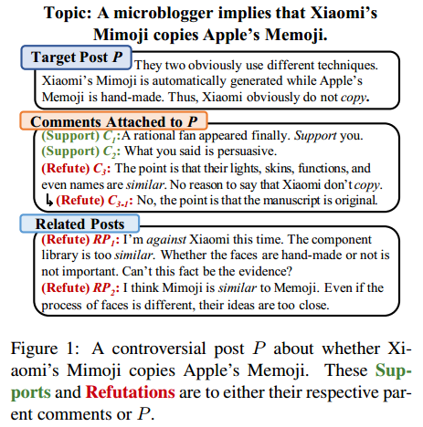
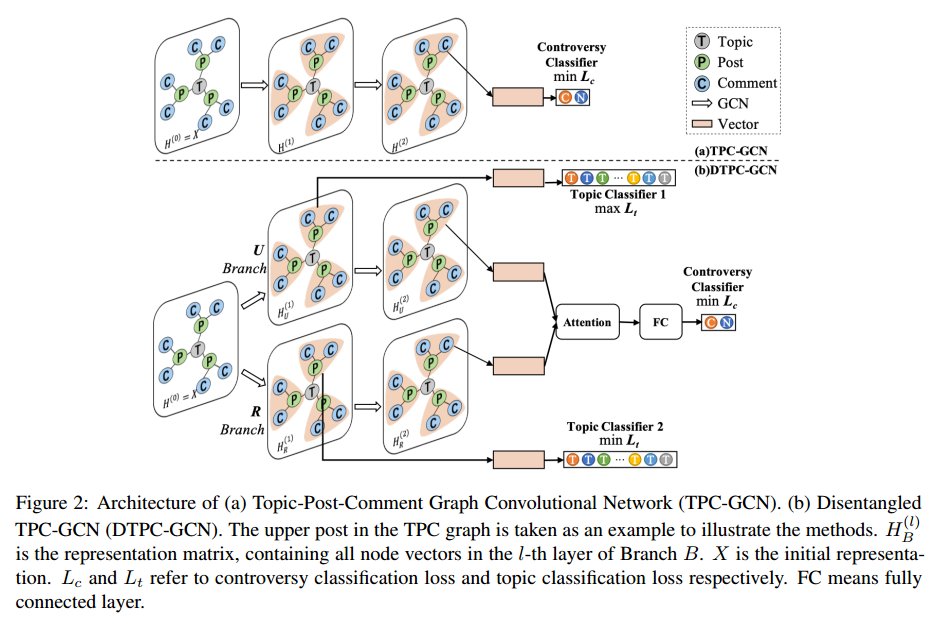
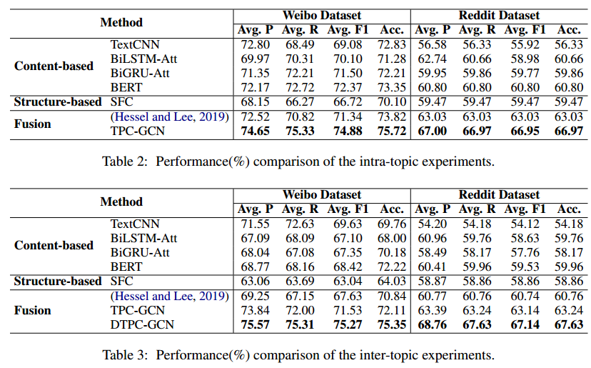

Integrating Semantic and Structural Information with Graph Convolutional Network for Controversy Detection
来源：ACL2020
Abstract
本文的任务是识别社交媒体上的争论性帖子（controversial posts），这是情感挖掘、事件影响评估以及消除极端观点任务的基础任务。
已有的方法存在的不足：
（1）不能有效地融合内容相关地帖子地语义信息
（2）不能保留回复关系这样的结构信息
（3）不能合理地处理训练集中没有出现过的话题的帖子。
为了解决前两个问题，本文提出了Topic-Post-Comment Graph Convolutional Network(TPC-GCN)，整合图结构信息和话题、帖子、评论的内容信息，来进行post级别的controversy detection。
为了解决第三个问题，本文进一步将TPC-GCN模型扩展成Disentangled TPC-GCN模型（DTPC-GCN），该模型可以将topic-related features与topic-unrelated features解耦然后动态融合。
Introduction
在社交媒体环境下，一些帖子所表达的观点会引发激烈的讨论并且导致参与用户之间的争论（可以理解为会引起用户之间的争论的帖子）。这些争论性帖子对于分析公众情绪非常有用，也因此引起了许多新的任务，比如news topic selection, influence assessment和alleviation of polarized views。自动识别争论性帖子是上面这些任务的基础。

本文的任务就是识别社交媒体中的争论性帖子，也就是给定一个帖子，对它进行分类，判断它是不是争论性帖子。
首先定义一下，啥叫争论性帖子（controversial posts）。
争论性帖子通常包含有具有争议性的内容，表达一个想法或一个观点，并且在回复中引发争论，这些争论有的是表达支持观点，有的表达反对观点。
在实际中，目标帖子的回复一般有两种：帖子的评论和其他与目标帖子内容上相关的帖子。
图1展示了一个例子，其中目标帖子表达了一种观点：小米的Mimoji没有抄袭苹果得到Memoji。从中我们可以看出三点：
（1）对于目标帖子，评论中有很多表示支持的，也有少部分表示反对的。然而，其他内容相关的帖子也存在反驳观点，从而加强了目标帖子的争论性。
（2）评论$C_{3-1}$表面上表达了反驳观点，但实际上它是支持目标帖子的，因为$C_{3-1}$反对$C_3$，而$C_3$又反对目标帖子，所以说$C_{3-1}$实际上是支持目标帖子的。
（3）有两种可以用来作为判断依据的情感线索：topic-related 和 topic-unrelated 线索。例如，support和against是与话题无关的，而copy和similar是与话题有关的。话题相关的特征可以帮助识别相同或相似话题下的帖子，然而他们对于这些不同话题中所起的作用则依赖于具体的环境。因此，为了全面地评估一个帖子的争论性，需要同时考虑帖子的评论以及内容相关的帖子，且同时从语义级别和结构级别考虑。
已有的检测社交媒体中争论性帖子的方法通常根据目标帖子的语义特征、他的评论以及它的结构特征来判断。然而，这些方法有三个缺陷：
（1）虽然考虑了帖子的评论，但是没有考虑其他内容相关的帖子。
（2）只使用基于统计的结构特征，无法建模回复的结构关系。例如无法清楚地识别图1中例子中地$C_{3-1}$的立场。
（3）这些方法使用话题相关的特征，这些特征在相似的话题下是有用的，但是在其他不相似的话题下可能起反作用。
本文中，首先构建了TPC图（Topic-Post-Comment）来描述topic、posts和comments之间的关系。为了保留回复结构信息，将每个comment节点与它回复的comment或者posts连接。为了引入相似的posts的信息，将每个post节点与它的topic节点连接。
然后在图上用GCN模型来学习节点表示。
最终，得到的帖子的向量表示和该帖子的comment的向量表示，然后将他们融合来预测是否是controversy帖子。
TPC-GCN主要应用于话题内的检测（intra-topic），也就是说，只适用于训练集中出现过的话题。它不能适应训练集中没有见过的话题。为了使模型能够扩展到没有见过的话题上，本文进一步将TPC-GCN扩展成了Disentangled TPC-GCN来进行话题间的检测（inter-topic）。
DTPC-GCN有两个分支，每个分子包含一个TPC-GCN，但是都增加了一个辅助任务：话题分类。两个分支的辅助函数的目标使解耦topic-related和topic-unrelated的特征。然后进一步将解耦的特征根据输入的特征进行动态的融合来做最后的决策。在数据集上的实验结果显示，本文的模型超过了已有的模型。本文的贡献点总结如下：
- 提出了TPC-GCN模型和DTPC-GCN模型，进行帖子级别的controversy detection。模型可以整合topic、post和comment的结构和内容信息，尤其是相关帖子和回复树的信息。另外，DTPC-GCN可以进一步解耦话题相关特征和话题无关特征来对没见过的话题的内容进行检测。
- 构建了一个用于争论帖子检测的中文数据集，包含5676个从中文微博收集的帖子，每一个都有人工标注的标签（controversial or non-controversial）。这是第一个中文的controversy detection的数据集。
- 在两个数据集上的实验结果证明了模型的有效性。
Methodology
首先介绍TPC-GCN模型，然后将其扩展成DTPC-GCN模型。

TPC Graph Construction
为了建模信息在topic、posts和comments之间的传播，构建一个topic-post-comment 图 $G=(V, E)$，其中$V, E$分别表示节点结合和边集合。
首先，为了保留post-comment和inter-comment关系，引入了评论树，每个评论节点和它所回复的节点连接。
然后，为了使帖子捕捉同一话题下其他相似帖子的信息，将帖子和他的话题节点连接。话题节点可以看作是一个中心节点（hub node），其作用使整合并交换信息。注意，这里的“话题”概念不一定是平台提供的话题例如Reddit上的subreddit或者微博上的hashtag。如果没有话题的化，可以用基于文本的聚类算法构建话题。
在图$G$中，每个节点表示一个话题、一个帖子或一个评论。每个边可能表示topic-post，post-comment或者comment-comment关系。最初将每个节点$v$根据其文本内容，使用一个预训练的语言模型得到一个嵌入表示$x$作为其最初的表示。
TPC-GCN
GCN对于编码图结构数据非常有效，尤其是它可以编码局部图结构信息和节点特征信息。GCN的这个特点与我们整合语义信息和结构信息的目标一致。
在GCN中，每个节点通过聚合邻居节点和自身节点的特征更新其表示，因此学到的表示既包含内容也包含结构。对于一个节点$v_i \in V$，信息传播的更新规则如下：
$$
h_{i}^{(l+1)}=\sigma\left(\sum_{j \in N_{i}} g\left(h_{i}^{(l)}, h_{j}^{(l)}\right)+b^{(l)}\right)
$$
$h_i^{(l)}$是节点$v_i$在第$l$层的隐表示，$N_i$是节点$v_i$的邻居集合（包含自身）。从$N_i$的输入信息通过函数$g$进行变换，然后通过激活函数$\sigma$得到每个节点的新的表示。$b^{(l)}$是偏置项。这里和Kipf原始的GCN模型使用相同的线性变换函数$g(h_i^{(l)}, h_j^{(l)})=W^{(l)}h_j$，其中$W^{(l)}$是学习参数。因此，传播规则变成下面这种形式：
$$
H^{(l+1)}=\sigma\left(\hat{A} H^{(l)} W^{(l)}+B^{(l)}\right)
$$
$H^{(l)}$包含所有节点在第$l$层的表示，$\hat{A}$表示归一化后的包含自环的邻接矩阵。$W^{(l)}$和$B^{(l)}$是权重矩阵和偏置项。
如图2a中所示，在TPC-GCN中，将$N$个$d$维的向量表示$H^{(0)}=X\in \mathbb{R}^{N\times d}$输入到2层的GCN中，得到信息传播后的表示$H^{(2)}$。然后，每个节点的向量表示和他的评论节点的表示取平均得到融合后的帖子的向量表示$f_i$。最后，用一个$softmax$函数来得到每个帖子的controversy概率，用交叉熵作为损失：
$$
L_{c}=-\frac{1}{N} \sum_{i}\left(\left(1-y_{i}^{c}\right) \log \left(1-p_{i}^{c}\right)+y_{i}^{c} \log \left(p_{i}^{c}\right)\right)
$$
其中$y_{i}^{c}$是标签，$1$表示controversial，$0$表示non-controversial，$p_{i}^{c}$是预测的第$i$个帖子属于controversial的概率，$N$是训练集中的样本个数。
TPC-GCN的缺陷在于，学到的表示更倾向于捕捉topic-related的特征。因此TPC-GCN更适合对intra-topic的检测，而不适合做inter-topic的检测。
Disentangled TPC-GCN
直观上来说，对于没有见过的话题（inter-topic detection），话题无关的特征更加有效。然而，话题相关的特征对于那些虽然没见过但是与已见过的话题相似的话题是有效的。一次你，话题相关特征和话题无关特征都是有用的，但是他们的权重应该视具体情况而定。基于以上分析，本文提出Disentangled TPC-GCN（如图2b）来做inter-topic detection。
DPTC-GCN包含两部分：两个多任务分支用来做解耦，一个注意力机制来做动态融合。
Two-branch Multi-task Architecture
为了得到话题相关和话题无关的特征，使用了两个分支的TPC-GCN，并采用了多任务架构，分别记为$R$表示话题相关分支，$U$表示话题无关分支。在R和U中使用话题分类作为辅助任务。对于每个分支，首先用话题分类任务训练第一层GCN。话题分类器的输入是第一层GCN得到的表示$H^{(1)}$的融合，融合过程与前面得到$f_i$的过程一致，即把post和它的comments的表示取平均。使用交叉熵损失如下：
$$
L_{t}=-\frac{1}{N} \sum_{k} \sum_{i} y_{i k}^{t} \log \left(p_{i k}^{t}\right)
$$
$y_{ik}^{t}$是标签，$1$表示ground-truth topic，$0$表示不正确的话题类别，$p_{ik}^{t}$是预测的第$i$个帖子属于第$k$个话题的概率，$N$是训练样本的个数。两个分支R与U的不同之处在于，对于R分支，目标是最小化损失$L_t$从而能够得到话题相关的特征，而对于U分支，目标是最大化损失$L_t$从而得到话题无关的特征。
然后使用第二层GCN，并且用两个任务对每个分支独立地进行训练，即话题分类和controversy分类。
Attention Mechanism
独立训练之后，分支U和R应该能够分别捕获了话题无关和话题相关地特征。作者进一步动态融合两个分支地特征。具体来说，冻结U和R部分的参数，只训练融合部分。对于融合向量$f_U$和$f_R$的加权组合，使用注意力机制来融合：
$$
\begin{array}{c}
\mathcal{F}\left(f_{b}\right)=v^{T} \tanh \left(W_{\mathcal{F}} f_{b}+b_{\mathcal{F}}\right), b \in{U, R} \\
\alpha_{b}=\frac{\exp \left(\mathcal{F}\left(f_{b}\right)\right)}{\sum_{b \in{U, R}} \exp \left(\mathcal{F}\left(f_{b}\right)\right)} \\
u=\sum_{b \in{U, R}} \alpha_{b} f_{b}
\end{array}
$$
其中，$W_{\mathcal{F}}$是权重矩阵，$b_{\mathcal{F}}$是偏置。$v^{T}$是转置向量，$\mathcal{F} (\cdot)$计算输入向量的得分。分支U和R的特征的得分经过$softmax$函数归一化作为分支权重。两个分支的向量表示的加权和记为$u$，最终用这个$u$去进行最后的分类。损失仍然是与标签的交叉熵。
Experiment Result
实验结果如图3所示。

从实验结果看，模型相较于基础模型的提升还是比较明显的。baselines分为了三种：content-based, structure-based, fusion。
比较的baseline也不是非常多，可能是由于该任务比较新，做的研究也相对较少。
可以参考这种设计baseline的方法，比如自己设置baseline方法：BiLSTM-Att，BiGRU-Att。
Conclusion
本文的启发包含两点：
- 本文的任务是进行controversial post检测，通过构建topic-post-comment图，来捕捉(a)post的comment信息(b)同一个话题下的内容相关的其他post的信息(c)post以及comment的回复结构信息。
- 进一步将TPC-GCN模型扩展，通过扩展为两个分支，并且分别使用话题分类作为辅助任务，来解耦话题相关特征和话题无关特征，从而使得模型能够动态调整对于两种特征的依赖，从而使模型也能够适用于没见过的话题。